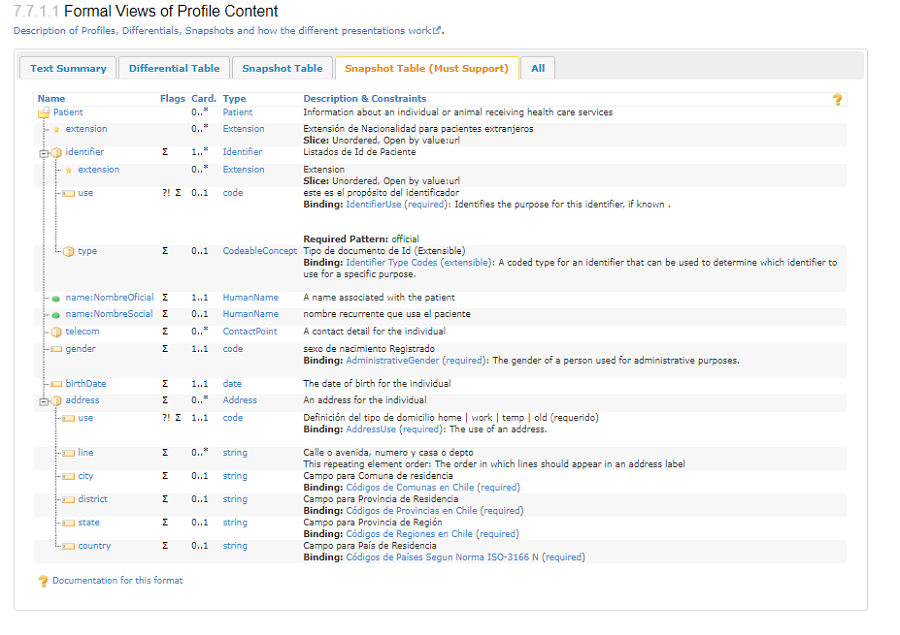
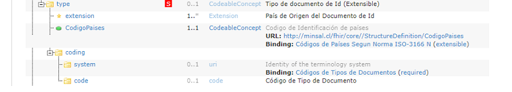

Guía de Implementación FHIR de ESAVI
0.2.0 - ci-build

Guía de Implementación FHIR de ESAVI
0.2.0 - ci-build

Guía de Implementación FHIR de ESAVI - Local Development build (v0.2.0) built by the FHIR (HL7® FHIR® Standard) Build Tools. See the Directory of published versions
Esta sección describe definiciones, interpretaciones y requisitos importantes comunes a todos los actores del la guía de implementación ESAVI de OPS, utilizados en esta guía. Los verbos de conformidad - SHALL (Debe), SHOULD (Debería Si Condición), MAY (Podría) - utilizados en esta guía se definen en las reglas de conformidad de FHIR.
Los perfiles contienen ciertos elementos que son importantes de comprender a la hora de usarlos para implementación
Al revisar un perfil nos encontramos con la posibilidad de ver múltiples vistas de este.
Esta vista permite ver un resumen del Perfil como de que recurso proviene elementos mandatorios, eliminados y que deben ser soportados. Además, resume las extensiones y slices generados en el diseño.
Esta vista permite observar todos aquellos elmentos de un recurso que han sido modificadas o adecuadas para la realidad local. Esto incluye cambios como cardinalidad, explicaciones, MS o cualquier otro. Los elementos que se han mantenido tal cual en el recurso madre no figuran en esta vista.
Por razon de lenguaje, toda traducción de la descripción de un elemento se considera un cambio y figura en esta vista.

En la vista de la Snapshot Table, todos los elementos obligatorios definidos para el perfil, y cualquier elemento obligatorio o que deba ser apoyado heredado de un perfil base, están marcados con una S.

En la vista Snapshot Table (Must Support), todos los elementos presentados en la vista son obligatorios o deben ser compatibles con el perfil.

El CMD definido para cada recurso se deja caracterizado por la bandera MS que significa Must Support. Este indicador determina que el sistema que recibe ese elemento de un recurso DEBE soportar el poder procesarlo y almacenarlo.
La existencia de un elemento o ruta con MS no determina la obligatoriedad de que un recurso generado contenga el dato. Esto se define mediante la obligatoriedad del dato lo cual DEBE estar especificado en la cardinalidad
La cardinalidad define dos aspectos de un elemento dentro de un perfil
De esta forma nos encontramos con varias situaciones
{0..1} : El elemento se Puede no ser descrito en el recurso (valor 0 inicial), pero de usarse Debe ser desarrollado solo una vez (1 final)
{1..1} : El elemento es obligatorio pero solo se puede desplegar 1 sola vez
{0..3} : Elemento no obligatorio que se puede repetir hasta 3 veces
{1..3} : Elemento obligatorio que puede repetirse hasta 3 veces
{1..*} : Elemento obligatorio que se puede repetir infintas veces
La vinculación obligatoria a una definición de conjunto de valores significa que SE DEBE utilizar uno de los códigos del conjunto de valores especificado. En el caso de +CodeableConcept+, no es válido utilizar sólo texto, pero se permiten múltiples codificaciones (traducciones).
La vinculación extensible a una definición de conjunto de valores significa que uno de los códigos del conjunto de valores especificado SE DEBE USAR si existe un concepto aplicable, pero si no existe un código adecuado en el conjunto de valores, se PUEDE proporcionar un código o códigos alternativos en su lugar. Para CodeableConcept se permiten múltiples codificaciones y esta regla se aplica a una de ellas. También en el caso de CodeableConcept, si sólo se dispone de texto, se puede utilizar sólo el texto.

La guía desarrolla una serie de ejemplos por perfil desarrollado. Este ejemplo muestra en código como un sistema hace uso de un perfil para generar un recurso. Estos ejemplos se acceden desde la página ejemplos o desde la lengüeta ejemplo de cada perfil
Además cada ejemplo viene descrito en 4 formatos:
{
"resourceType" : "Patient",
"id" : "PacienteCL",
"meta" : {
"profile" : [
"http://core.hl7chile.cl/StructureDefinition/CorePacienteCl"
]
},
"text" : {
"status" : "generated",
"div" : "<div xmlns=\"http://www.w3.org/1999/xhtml\"><p><b>Generated Narrative</b></p><p><b>identifier</b>: NNCH: 15.236.327-k (OFFICIAL)</p><p><b>active</b>: true</p><p><b>name</b>: Marietta María Ximena Rosales (OFFICIAL), Xime </p><p><b>telecom</b>: ph: 943561833(MOBILE), <a href=\"mailto:mariRosal@mimail.com\">mariRosal@mimail.com</a></p><p><b>gender</b>: female</p><p><b>birthDate</b>: 1983-03-24</p><p><b>address</b>: Av Los Chirimoyos, 32, casa 4 5101 5 152 (HOME)</p></div>"
},
"identifier" : [
{
"use" : "official",
"type" : {
"extension" : [
{
"url" : "http://core.hl7chile.cl/StructureDefinition/CodigoPaises",
"valueCodeableConcept" : {
"coding" : [
{
"code" : "152",
"display" : "Chile"
}
]
}
}
],
"coding" : [
{
"code" : "NNCH"
}
]
},
"value" : "15.236.327-k"
}
],
"active" : true,
"name" : [
{
"use" : "official",
"family" : "Rosales",
"_family" : {
"extension" : [
{
"url" : "http://hl7.org/fhir/StructureDefinition/humanname-mothers-family",
"valueString" : "Bosh"
}
]
},
"given" : [
"Marietta",
"María",
"Ximena"
]
},
{
"use" : "usual",
"given" : [
"Xime"
]
}
],
"telecom" : [
{
"system" : "phone",
"value" : "943561833",
"use" : "mobile"
},
{
"system" : "email",
"value" : "mariRosal@mimail.com",
"use" : "work"
}
],
"gender" : "female",
"birthDate" : "1983-03-24",
"address" : [
{
"use" : "home",
"line" : [
"Av Los Chirimoyos, 32, casa 4"
],
"city" : "5101",
"district" : "051",
"state" : "5",
"country" : "152"
}
]
}